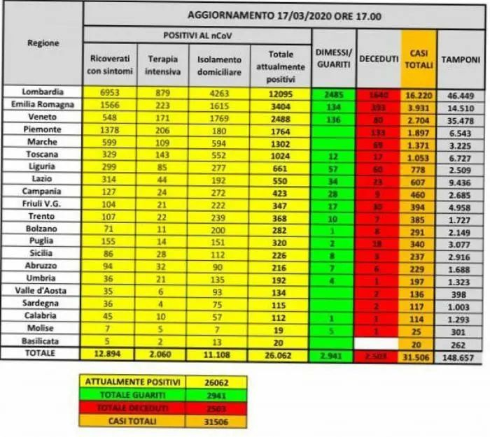

老鹰疫情日记/ 一位中国女人在意大利的疫情反思：往来都是暂时人
原文链接 备份链接 昨日，米兰有小区突然宣布封闭，我住的城市都灵离米兰大概30多分钟车程，电视里轰天轰地的全是冠状病毒的消息，把人一下就弄晕了，我和家人一个多月前计划的那不勒斯旅游正好是今天开始，我们讨论了一下，决定还是出发，毕竟觉得有疫 …
[
](https://app.21jingji.com/html/2020yiqing/?from=timeline&isappinstalled=0)
导读：希望病毒和愚昧、偏见都早点过去吧。
来 源丨21世纪经济报道（ID：jjbd21）
记 者丨老鹰（olla外语角创始人 旅居意大利 自学5门外语）
编 辑丨李艳霞
3月16日，被封城后意大利普通人的生活
“在家呆着有点烦了,大家都在干嘛,分享下吧？”
此话一出，WhatsApp里的家庭群马上活跃起来了。做法律工作的外甥女说：我现在终于过上正常的生活了，我终于有时间慢慢洗头和梳妆。因为刚大学毕业，在一家离家不近的律所工作，她每天跑来跑去忙得脚不沾地。
“请谁推荐一些电影给我，我现在只能看那种更轻松、完全痴呆的电影！”另一个外甥女也在看电影，她推荐了Montalbano的电影，姐姐推荐了Parasite，哥哥推荐了Furore的书《Steinbeck》。大家相互推荐书和电影，气氛活跃起来。这段时间大家呆在家里看书看电影干家务，倒是自在。
姐姐说：“我出门到田野散步了，还做了点运动。健美教练发了视频给我照着练，你要练么我发给你。”
“不用了，我懒得练动作，只做一些最基本的动作。”
她分享了初春田野的照片，金灿灿的油菜花开了，好悦目。我不禁说了句：好美。我想过两天我也到外面田野散散步，和别人保持距离就好了。
嫂子分享了她的桌面照片，一台手提电脑里正播放中国少林寺的一套气功练习，她说她很喜欢中国气功，在跟着练。

刷了微信再刷其他社交媒体平台。
意大利人制作了很多搞笑的短视频自嘲，一个是疫情中意大利人的典型类型，一个是疫情期间去旅游的短视频，非常有趣，分享个给大家一起乐一乐。想起此前中国疫情期间也有不少国人自嘲解闷的短视频，真是佩服人们的创造力，越是在这种低落的时候，越能通过他们感受到生命创造的价值。
疫情封城期间的生活，有几种特别典型。
有的很喜欢社交的就憋不住，有的骑单车跑出去健身转圈，有的宅在家里看书刊影视刷网络，有的特别喜欢做点家务和园林…… 有的就制作一些搞笑短视频或者发帖子跟朋友分享。
都灵的封城和意大利全国封闭与中国重视程度类似，不过由于文化差异，大家具体做法大有不同。
这边封城只是不允许出城，城内咖啡厅、影院、歌厅等公众场所关闭，只留一些必要的地方比如药店、医院和食品店等，其他都是自由的。
但政府要求大家彼此间保持1米以上距离，避免空气传染，而且再三强调要勤洗手，出门在外回来务必先洗手。
我们家和我知道的朋友们还都比较自觉，一般都猫在家里不出门也不走动了。
不过，还是有人不顾病毒传染风险，依旧活跃社交，引发民愤。
有人在网上发帖骂这些人，这个帖子也被家人分享到家庭群里。
意思是“被投诉者超过被感染的数量。我们的白痴比病人多。”
帖子，意思是，“被投诉者超过被感染的数量，我们的白痴比病人多”。
在意大利独自面对新型冠状病毒之后的大约个把月时间，法国和德国终于崩不住了，他们突然大量检测出携带病毒的人群，决定采取和意大利类似的封城和关闭各项公共活动场所的行动了。
老公评价说：我就预见到这个，他们错过了最好的开始时间，整个欧洲问题会越来越大。意大利先那么做一点都不傻。
3月17日 为什么感染人数还在增加？
今天总感染人数已经超过3万了。
每天两、三千的增长，为什么感染人数还没打住？

老公说：意大利北方医疗设施完善，而且不断在扩展新增资源，包括中国在内的很多支援也在到位，险情基本控制住了，现在基本上在轨道上，在消化存量，但是前期封城的时候很多北方人逃到南方去，估计后面南方还会涌现一大批感染者。
姐姐说，不用太担心，现在医院传来的消息是资源足够应对，都在能力范围。米兰旁边刚在启用一个新急救医院，将增加200个床位，而且其他地方也在准备着。我是替意大利人着急，可他们看来还挺稳的。
意大利人口大约6000多万，和湖北省常住人口类似。意大利政府率先在欧洲采取严密措施应对病毒传播，现在湖北都基本控制住了，意大利为什么还在不断刷新纪录？和日本的朋友连线，她跟我说，日本从头到尾都控制的非常好。同样都是小岛国，而且日本人口比意大利多了三、四倍，可是感染人数比意大利少，为什么？
大家讨论了一番。她说，估计这跟国民性格有关，日本人非常节制和理性，他们会自觉遵守规则并尽可能不给社会和其他人带来麻烦，因此，一旦得病都把隔离和救治做得非常到位。
而意大利人比较自由散漫，不喜欢受约束，自控方面就没有日本人那么强；另外，也不可能采用中国那样的全民监控政策，因为大家强调隐私权利，无法运用类军事化管控方式，政府无权实时公布病人分布情况和跟踪病人接触范围，只能在调查每个新增案例后，由专业人员和志愿者跟踪和通知所有他接触过的人群，并立即进行检测和排查、隔离等。
而且，由于新冠病毒有很多携带者并无明显病症，这就给工作带来了更多困难。
3月18日 封城后第一次上街
今天冰箱里的蔬菜基本吃完了，而且我想以后得尽量减少外出购物，最好在自家花园种点蔬菜瓜果。所以，今天我用卫生纤维制作了一个临时口罩，然后出门了。
小区路边车辆密集，可以想象大家都呆在家里，街上还有不少车来车往，偶然还看到有人骑单车，有人在溜狗。戴口罩的人明显多了起来。
家附近的花店竟然开着，里面卖水果蔬菜的种子和园林工具，还有部分宠物食品。店员带着N95口罩。
我选了一些种子，付了钱。
店员说：我这里因为是卖农副产品和宠物食品，所以照常开着，除了周六都开着。但看这个情形如果继续发展下去，我们也不知道能开多久。
到家附近的超市买食品，超市里除了食品区域开放，其他区域都封闭了。超市旁边的咖啡店和服装店、美发店等都关闭。店员大都带着口罩，也有个别并没有戴口罩。我拍了点视频，被一个没戴口罩的店员发现，他走向我要求我删除。我对他捂了捂口罩赶紧走开了。
食品很充裕，价格和封城前没有区别。结银处的店员说：这个星期恢复正常了，不像上一两周那么疯狂。
回去的路上，又遇到封城首日遇到的那个小姑娘。她骑着单车，眼神很警觉的看我，由于上次的原因，我没再和她说话。
路边小菜园开着明亮的油菜花，抬头看天，一大群雁阵人字形飞过。天很蓝，阳光暖暖的，能享受正常的生活真美好。希望病毒和愚昧、偏见都早点过去吧。

本期编辑 刘巷
[

](https://app.21jingji.com/html/2020yiqing_fgfc/)
[
](http://help.21so.com/index/companyhelp)
百万读者都在看……
昨夜，美股全面反弹！美元指数飙涨！“美元荒”要来了？特朗普欲直接发钱：大人1000小孩500！
我在看，你呢？
原文链接 备份链接 昨日，米兰有小区突然宣布封闭，我住的城市都灵离米兰大概30多分钟车程，电视里轰天轰地的全是冠状病毒的消息，把人一下就弄晕了，我和家人一个多月前计划的那不勒斯旅游正好是今天开始，我们讨论了一下，决定还是出发，毕竟觉得有疫 …
原文链接 备份链接 疫情暴发之初，在欧洲的中国留学生普遍比较平静。随着疫情在欧洲迅速蔓延，留学生们就算“确有回国需求”，也很难立即回来，直航纷纷取消，转机充满变数，包机需要审批，既然暂时回不来，那就只能留下来继续抗疫 文 |《财经》记者 …
原文链接 备份链接 *****到了晚上，城市变得出奇的安静。意大利人爱玩，若是没有疫情的话，晚上的酒吧和运河区，会是年轻人聚集的地方。在小酒馆里，他们花上十欧元，点一杯饮料，一坐就很久。“现在这些都没有了。”***** Stella家楼 …
原文链接 备份链接 我不太确定学校停课的时间会不会继续延长。因为我们在群里对此次意大利疫情的预测是不太乐观的。 记 者 | 应 琛 受访者 | 王艺林 上午在宿舍自习完之后，我习惯性地打开新闻网站了解当天意大利新冠肺炎疫情的最新情况。我 …
原文链接 备份链接 3月9日，意大利总理孔特签署全境防疫法令，3月10日，意大利“封国”了。法令规定除必要需求、工作、就医外需避免外出，法令规定情况内的外出需准备个人声明。仅隔一天，意大利其他地区的人们就和米兰“站在了一起”，加入了宅家队 …